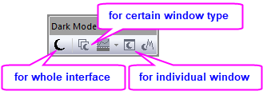
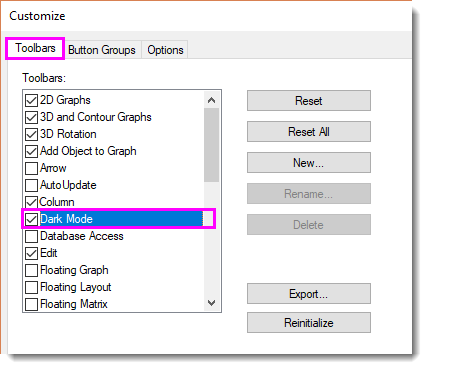

FAQ-1190 Wie schalte ich den Dunkelmodus ein/aus?
Turn-on-Dark-Mode
Letztes Update: 27.11.2023
Seit Origin 2024 wird der Dunkelmodus unterstützt. Per standard startet Origin im Dunkelmodus, falls die Fensterfarbe Ihrs Betriebssystems auf Dunkelmodus gesetzt ist.
|
Anforderungen des Betriebssystems für Dunkelmodus
- Windows 10 (V1809) oder Windows Server 2019 oder höher.
|
Falls Origin im Dunkelmodus gestartet wird, Sie aber den Hellmodus verwenden möchten oder umgekehrt, können Sie dies innerhalb von Origin einstellen.
Dunkelmodus ausschalten
- Setzen Sie die Systemvariable @CTP auf 0. Das heißt:
- Wählen Sie im Menü Fenster: Skriptfenster.
- Geben Sie im aufgerufenen Skriptfenster das folgende Skript ein und drücken Sie Enter, um es auszuführen:
@CTP =0
-
Beachten Sie, dass die Systemvariable @CTP auf Registern basiert, so dass die Einstellungen instanzübergreifend beibehalten werden.
ODER
- Verwenden Sie die Schaltflächen der Symbolleiste Dunkelmodus. Das heißt:
- Klicken Sie auf die Schaltfläche GUI umschalten
 auf der Symbolleiste Dunkelmodus.
auf der Symbolleiste Dunkelmodus.
Beachten Sie, dass die Symbolleiste Dunkelmodus mehr Optionen bietet, um zwischen den Modi zu wechseln.
- 
Falls Sie die Symbolleiste Dunkelmodus nicht finden können, sie z. B. aus Versehen beim ersten Start geschlossen haben,
können Sie sie folgendermaßen zurückholen:
- Wählen Sie im Menü Ansicht: Symbolleisten.
- Wechseln Sie im Dialog Anpassen zur Registerkarte Symbolleisten. Suchen Sie Dunkelmodus in der Liste und aktivieren Sie ihn.
- 
Schlüsselwörter:Dunkelmodus, Hellmodus, Farbdesign Einstellung, Fensterfarbe ändern